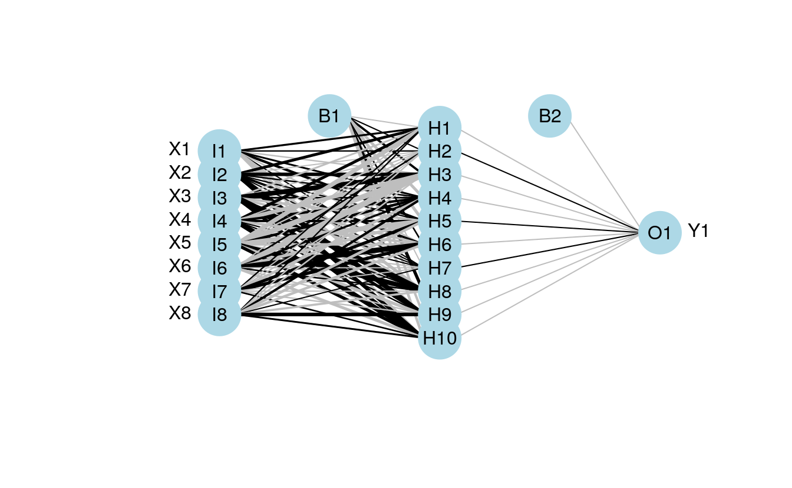
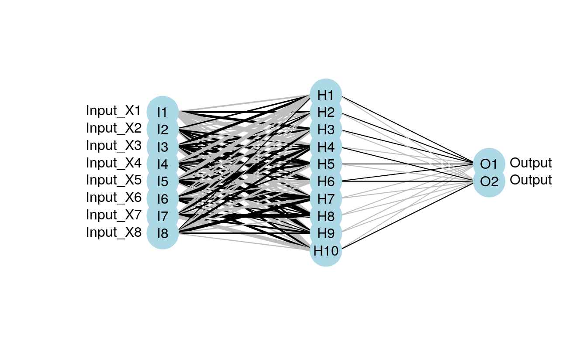
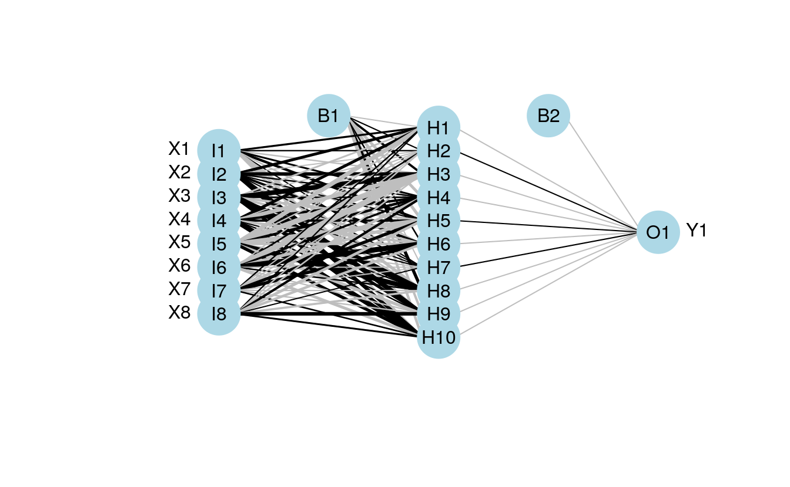
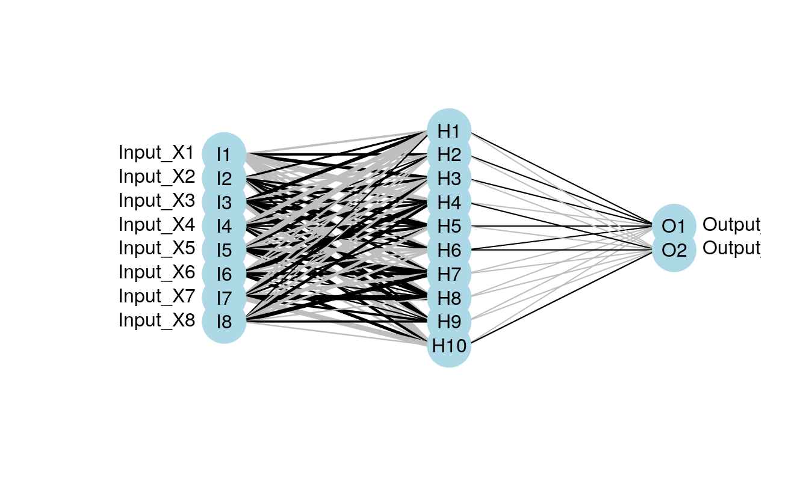

43 Visualization of neural networks
https://beckmw.wordpress.com/tag/neuralnet/
In my last post I said I wasn’t going to write anymore about neural networks (i.e., multilayer feedforward perceptron, supervised ANN, etc.). That was a lie. I’ve received several requests to update the neural network plotting function described in the original post. As previously explained, R does not provide a lot of options for visualizing neural networks. The only option I know of is a plotting method for objects from the neuralnet package. This may be my opinion, but I think this plot leaves much to be desired (see below). Also, no plotting methods exist for neural networks created in other packages, i.e., nnet and RSNNS. These packages are the only ones listed on the CRAN task view, so I’ve updated my original plotting function to work with all three. Additionally, I’ve added a new option for plotting a raw weight vector to allow use with neural networks created elsewhere. This blog describes these changes, as well as some new arguments added to the original function.
As usual, I’ll simulate some data to use for creating the neural networks. The dataset contains eight input variables and two output variables. The final dataset is a data frame with all variables, as well as separate data frames for the input and output variables. I’ve retained separate datasets based on the syntax for each package.
library(clusterGeneration)
#> Loading required package: MASS
library(tictoc)
seed.val<- 12345
set.seed(seed.val)
num.vars<-8
num.obs<-1000
# input variables
cov.mat <-genPositiveDefMat(num.vars,covMethod=c("unifcorrmat"))$Sigma
rand.vars <-mvrnorm(num.obs,rep(0,num.vars),Sigma=cov.mat)
# output variables
parms <-runif(num.vars,-10,10)
y1 <- rand.vars %*% matrix(parms) + rnorm(num.obs,sd=20)
parms2 <- runif(num.vars,-10,10)
y2 <- rand.vars %*% matrix(parms2) + rnorm(num.obs,sd=20)
# final datasets
rand.vars <- data.frame(rand.vars)
resp <- data.frame(y1,y2)
names(resp) <- c('Y1','Y2')
dat.in <- data.frame(resp, rand.vars)
dplyr::glimpse(dat.in)
#> Rows: 1,000
#> Columns: 10
#> $ Y1 <dbl> 25.442, -14.578, -36.214, 15.216, -6.393, -20.849, -28.665, -87.36…
#> $ Y2 <dbl> 16.9, 38.8, 31.2, -31.2, 93.3, 11.7, 59.7, -103.5, -49.8, 50.1, 28…
#> $ X1 <dbl> 3.138, -0.705, -4.373, 0.837, 0.787, 1.923, -1.419, 1.121, -0.423,…
#> $ X2 <dbl> 0.1945, -0.3016, 0.7734, 1.3112, 3.5056, 1.2453, 3.8002, -0.1646, …
#> $ X3 <dbl> -1.795, -2.596, 2.308, 4.081, -3.921, 1.473, -0.926, 7.101, 2.366,…
#> $ X4 <dbl> -2.7216, 3.0589, 1.2455, 3.4607, 2.3775, -2.9833, 2.6669, -0.3046,…
#> $ X5 <dbl> 0.0407, 0.7602, -3.0217, -4.2799, 2.0859, 1.4765, 0.0561, 2.8328, …
#> $ X6 <dbl> -1.4820, -0.5014, 0.0603, -1.8551, 2.2817, 1.7386, 1.7450, -2.8279…
#> $ X7 <dbl> -0.7169, -0.3618, -1.5283, 4.2026, -6.1548, -0.3545, -6.0284, 9.52…
#> $ X8 <dbl> 1.152, 1.810, -1.357, 0.598, -1.425, -1.210, -1.004, 2.494, -0.702…The various neural network packages are used to create separate models for plotting.
# first model with nnet
#nnet function from nnet package
library(nnet)
set.seed(seed.val)
tic()
mod1 <- nnet(rand.vars, resp, data = dat.in, size = 10, linout = T)
#> # weights: 112
#> initial value 4784162.893260
#> iter 10 value 1794537.980652
#> iter 20 value 1577753.498759
#> iter 30 value 1485254.945754
#> iter 40 value 1449238.248497
#> iter 50 value 1427720.291593
#> iter 60 value 1416950.633230
#> iter 70 value 1405977.228751
#> iter 80 value 1392096.965794
#> iter 90 value 1365158.497142
#> iter 100 value 1358854.803800
#> final value 1358854.803800
#> stopped after 100 iterations
toc()
#> 0.162 sec elapsed
# nn <- neuralnet(form.in,
# data = dat.sc,
# # hidden = c(13, 10, 3),
# hidden = c(5),
# act.fct = "tanh",
# linear.output = FALSE,
# lifesign = "minimal")
# 2nd model with neuralnet
# neuralnet function from neuralnet package, notice use of only one response
library(neuralnet)
softplus <- function(x) log(1 + exp(x))
sigmoid <- function(x) log(1 + exp(-x))
dat.sc <- scale(dat.in)
form.in <- as.formula('Y1 ~ X1+X2+X3+X4+X5+X6+X7+X8')
set.seed(seed.val)
tic()
mod2 <- neuralnet(form.in, data = dat.sc, hidden = 10, lifesign = "minimal",
linear.output = FALSE,
act.fct = "tanh")
#> hidden: 10 thresh: 0.01 rep: 1/1 steps: 26361 error: 160.06372 time: 26.03 secs
toc()
#> 26.043 sec elapsed
# third model with RSNNS
# mlp function from RSNNS package
library(RSNNS)
#> Loading required package: Rcpp
set.seed(seed.val)
tic()
mod3 <- mlp(rand.vars, resp, size = 10, linOut = T)
toc()
#> 0.305 sec elapsedI’ve noticed some differences between the functions that could lead to some confusion. For simplicity, the above code represents my interpretation of the most direct way to create a neural network in each package. Be very aware that direct comparison of results is not advised given that the default arguments differ between the packages. A few key differences are as follows, although many others should be noted. First, the functions differ in the methods for passing the primary input variables.
The nnet function can take separate (or combined) x and y inputs as data frames or as a formula, the neuralnet function can only use a formula as input, and the mlp function can only take a data frame as combined or separate variables as input. As far as I know, the neuralnet function is not capable of modelling multiple response variables, unless the response is a categorical variable that uses one node for each outcome. Additionally, the default output for the neuralnet function is linear, whereas the opposite is true for the other two functions.
Specifics aside, here’s how to use the updated plot function. Note that the same syntax is used to plot each model
# import the function from Github
library(devtools)
#> Loading required package: usethis
source_url('https://gist.githubusercontent.com/fawda123/7471137/raw/466c1474d0a505ff044412703516c34f1a4684a5/nnet_plot_update.r')
#> SHA-1 hash of file is 74c80bd5ddbc17ab3ae5ece9c0ed9beb612e87ef
# plot each model
plot.nnet(mod1)
#> Loading required package: scales
#> Loading required package: reshape
plot.nnet(mod2)
plot.nnet(mod3)
#> Warning in plot.nnet(mod3): Bias layer not applicable for rsnns object 

The plotting function can also now be used with an arbitrary weight vector, rather than a specific model object. The struct argument must also be included if this option is used. I thought the easiest way to use the plotting function with your own weights was to have the input weights as a numeric vector, including bias layers. I’ve shown how this can be done using the weights directly from mod1 for simplicity.
wts.in <- mod1$wts
struct <- mod1$n
plot.nnet(wts.in,struct=struct)Note that wts.in is a numeric vector with length equal to the expected given the architecture (i.e., for 8 10 2 network, 100 connection weights plus 12 bias weights). The plot should look the same as the plot for the neural network from nnet.
The weights in the input vector need to be in a specific order for correct plotting. I realize this is not clear by looking directly at wt.in but this was the simplest approach I could think of. The weight vector shows the weights for each hidden node in sequence, starting with the bias input for each node, then the weights for each output node in sequence, starting with the bias input for each output node. Note that the bias layer has to be included even if the network was not created with biases. If this is the case, simply input a random number where the bias values should go and use the argument bias=F. I’ll show the correct order of the weights using an example with plot.nn from the neuralnet package since the weights are included directly on the plot.
If we pretend that the above figure wasn’t created in R, we would input the mod.in argument for the updated plotting function as follows. Also note that struct must be included if using this approach.
mod.in<-c(13.12,1.49,0.16,-0.11,-0.19,-0.16,0.56,-0.52,0.81)
struct<-c(2,2,1) #two inputs, two hidden, one output
plot.nnet(mod.in, struct=struct)Note the comparability with the figure created using the neuralnet package. That is, larger weights have thicker lines and color indicates sign (+ black, – grey).
One of these days I’ll actually put these functions in a package. In the meantime, please let me know if any bugs are encountered.
43.1 caret and plot NN
I’ve changed the function to work with neural networks created using the train function from the caret package. The link above is updated but you can also grab it here.
library(caret)
#> Loading required package: lattice
#> Loading required package: ggplot2
#>
#> Attaching package: 'caret'
#> The following objects are masked from 'package:RSNNS':
#>
#> confusionMatrix, train
mod4 <- train(Y1 ~., method='nnet', data=dat.in, linout=T)
plot.nnet(mod4,nid=T)
#> Warning in plot.nnet(mod4, nid = T): Using best nnet model from train output
fact<-factor(sample(c('a','b','c'),size=num.obs,replace=T))
form.in<-formula('cbind(Y2,Y1)~X1+X2+X3+fact')
mod5<-nnet(form.in,data=cbind(dat.in,fact),size=10,linout=T)
#> # weights: 82
#> initial value 4799569.423556
#> iter 10 value 2864553.218126
#> iter 20 value 2595828.194160
#> iter 30 value 2517965.483939
#> iter 40 value 2464882.178242
#> iter 50 value 2444238.701539
#> iter 60 value 2424302.507241
#> iter 70 value 2395226.893106
#> iter 80 value 2375603.533929
#> iter 90 value 2339340.538338
#> iter 100 value 2300041.821875
#> final value 2300041.821875
#> stopped after 100 iterations
plot.nnet(mod5,nid=T)43.3 Binary predictors
Here’s an example using the neuralnet function with binary predictors and categorical outputs (credit to Tao Ma for the model code).
library(neuralnet)
#response
AND<-c(rep(0,7),1)
OR<-c(0,rep(1,7))
# response with predictors
binary.data <- data.frame(expand.grid(c(0,1), c(0,1), c(0,1)), AND, OR)
#model
tic()
net <- neuralnet(AND+OR ~ Var1+Var2+Var3,
binary.data, hidden =c(6,12,8),
rep = 10,
err.fct="ce",
linear.output=FALSE)
toc()
#> 0.075 sec elapsed
#plot ouput
par(mar=numeric(4),family='serif')
plot.nnet(net)43.4 color coding the input layer
The color vector argument (circle.col) for the nodes was changed to allow a separate color vector for the input layer.
The following example shows how this can be done using relative importance of the input variables to color-code the first layer.
# example showing use of separate colors for input layer
# color based on relative importance using 'gar.fun'
##
#create input data
seed.val<-3
set.seed(seed.val)
num.vars<-8
num.obs<-1000
#input variables
library(clusterGeneration)
cov.mat<-genPositiveDefMat(num.vars,covMethod=c("unifcorrmat"))$Sigma
rand.vars<-mvrnorm(num.obs,rep(0,num.vars),Sigma=cov.mat)
# output variables
parms<-runif(num.vars,-10,10)
y1<-rand.vars %*% matrix(parms) + rnorm(num.obs,sd=20)
# final datasets
rand.vars<-data.frame(rand.vars)
resp<-data.frame(y1)
names(resp)<-'Y1'
dat.in <- data.frame(resp,rand.vars)
##
# create model
library(nnet)
mod1 <- nnet(rand.vars,resp,data=dat.in,size=10,linout=T)
#> # weights: 101
#> initial value 844959.580478
#> iter 10 value 543616.101824
#> iter 20 value 479986.887834
#> iter 30 value 465607.581653
#> iter 40 value 454224.889175
#> iter 50 value 448045.215005
#> iter 60 value 445024.634696
#> iter 70 value 442353.392985
#> iter 80 value 438868.995558
#> iter 90 value 435409.869319
#> iter 100 value 432831.005169
#> final value 432831.005169
#> stopped after 100 iterations
##
# relative importance function
library(devtools)
source_url('https://gist.github.com/fawda123/6206737/raw/2e1bc9cbc48d1a56d2a79dd1d33f414213f5f1b1/gar_fun.r')
#> SHA-1 hash of file is 9faa58824c46956c3ff78081696290d9b32d845f
# relative importance of input variables for Y1
rel.imp <- gar.fun('Y1',mod1,bar.plot=F)$rel.imp
#color vector based on relative importance of input values
cols<-colorRampPalette(c('green','red'))(num.vars)[rank(rel.imp)]
##
#plotting function
source_url('https://gist.githubusercontent.com/fawda123/7471137/raw/466c1474d0a505ff044412703516c34f1a4684a5/nnet_plot_update.r')
#> SHA-1 hash of file is 74c80bd5ddbc17ab3ae5ece9c0ed9beb612e87ef
#plot model with new color vector
#separate colors for input vectors using a list for 'circle.col'
plot(mod1,circle.col=list(cols,'lightblue'))